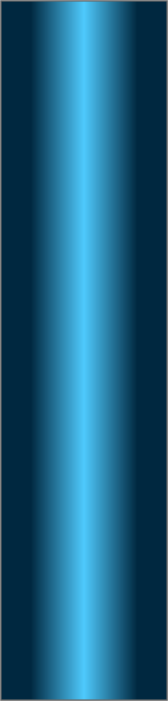
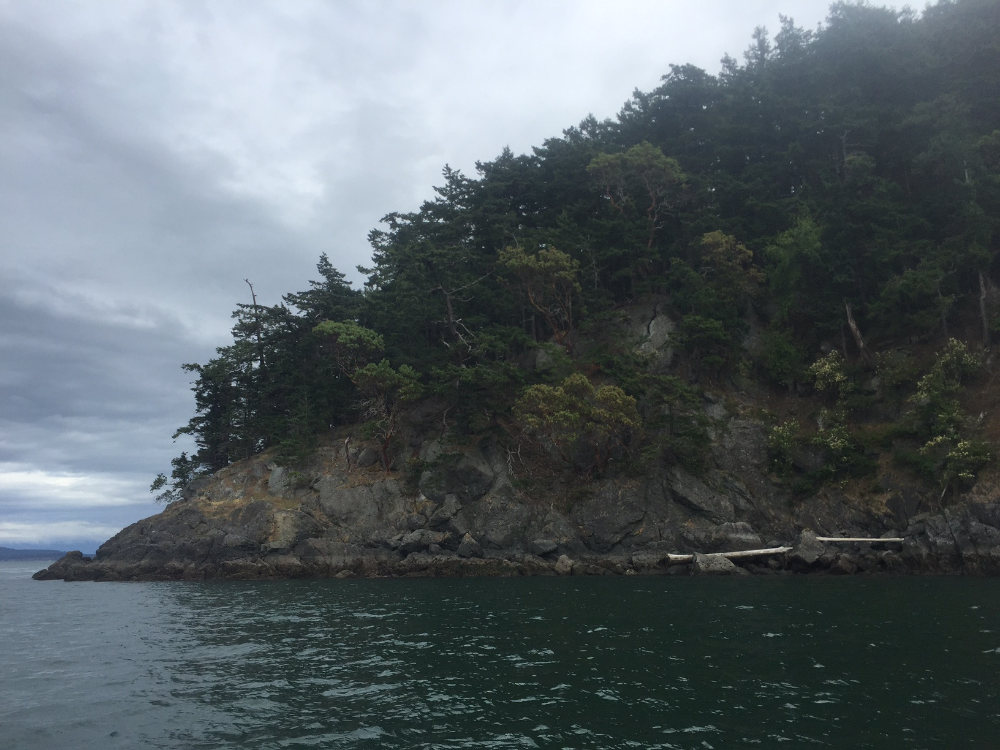
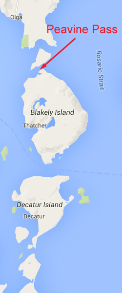
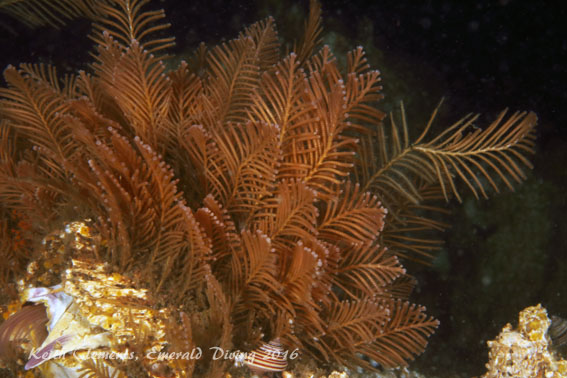

Double click to edit

Peavine Pass
Topography: Steep sloping rock substrate with boulders down to the base of the channel.
San Juan Islands marine life rating: 5
San Juan Islands structure rating: 3.5
Diving depth: Approximately 65 feet is the depth of the channel.
Highlight: Treasure-trove of invertebrate life!
Skill level: Intermediate, if done at slack.
GPS coordinates: N48° 35.319’ W122° 48.642’
Access by boat: Peavine Pass is located between Blakely and Obstruction Islands. The dive site is on the Blakely Island (south) side of the pass.
Shore access: None.
Dive profile: I run a live boat at this site as I do with most dives in the San Juan Islands. I enter the water just east of the pass . There is often a small kelp bed in a little notch right before the main section of the pass. From here, I simply work west along the slope.
At the kelp to the east of the pass, the substrate consist of some rock but also sand. As I work west, the terrain starts off fairly uninteresting with a cobble bottom and the occasional boulder. However, as I continue west and enter the main section of the pass, the ruggedness of the terrain intensifies until it is dominated by large boulders piled up on one another. I take my time and explore down to pass floor, which is about 65 feet.
My preferred gas mix: EAN 36
Current observations:
Current Station: Peavine Pass.
Noted Slack Corrections: None
A flooding current flows west through the pas, and an ebbing current east. This is a slack-water dive. I also only target exchanges of less than 2 knots and currents can pick up real fast and rip hard in this area. The good news about this pass is it bottoms out relatively shallow, so there is no chance of getting dragged down to 200 feet deep off the wall. At slack, I can swim around at leisure at this site with only a very mild current.
Hazards:
Current: Strong current off slack.
Boat Traffic: This can be a heavily frequent pass. I always fly a dive flag and stay on my divers.
Wind: Wind blowing through the pass the opposite direction the current is running can make for some intense, standing tide rips and waves.
Underwater visibility: Like many of the dives in Rosario Strait, underwater visibility tends to be relatively poor. I don’t expect more than 10-12 feet of vis at this site, but it can be worse.
Boat launches: Washington Park. Approximately 7 miles from the dive site. This park offers a good boat launch with docks, restroom facilities, and camping. Parking during summer months can be very tight, although some parking is reserved for day use.
Marine life: Peavine Pass represents an incredible explosion of invertebrate life. You won’t find a lot of big fish here, but you will find countless species of rock-hugging and benthic invertebrates. Some noteworthy Peavine Pass inhabitant:
Butteryfly crabs – a lots of them! White, orange, pink – take your choice. All different colors and sizes. My last dive here I noted at least 10.
Longhorn crabs – and many others. The rocks are crawling with crabs of various species. Even out on the cobble flats I still kind spider-type crabs roaming around.
Orange seapens - on the sandy bottom near the kelp bed is a great spot to see a field of seapens, and the striped nudibranchs that are hunting them down. However, there are small sandy pockets along the pass as well, often populated by vibrant orange seapens.
Mosshead warbonnet and scalyhead sculpin – and other small fish that can hide amongst the invertebrates and rocky cover when the current howls.
Puget Sound rockfish – again another species that will “come out” when the current is manageable, but take cover when the intensity picks up.
Hydroids – including dense aggregations of ostrich plume, various sea firs, and bushy-brown hydroids.
Burrowing sea cucumber, peppered sea cucumbers, and fringed tube worms – these densely packed invertebrates provide a beautiful carpet of orange, purple, brown, and white.
There is too much life here to list. Ascidians, seastars, jellies, nudibranchs, small rockfish, greenling, chiton, urchins, bi-valves, uni-valves, worms – this site has it all. If diving here in the spring/summer, make certain to check out the top of the water column as there are often really cool jellyfish feeding.
San Juan Islands marine life rating: 5
San Juan Islands structure rating: 3.5
Diving depth: Approximately 65 feet is the depth of the channel.
Highlight: Treasure-trove of invertebrate life!
Skill level: Intermediate, if done at slack.
GPS coordinates: N48° 35.319’ W122° 48.642’
Access by boat: Peavine Pass is located between Blakely and Obstruction Islands. The dive site is on the Blakely Island (south) side of the pass.
Shore access: None.
Dive profile: I run a live boat at this site as I do with most dives in the San Juan Islands. I enter the water just east of the pass . There is often a small kelp bed in a little notch right before the main section of the pass. From here, I simply work west along the slope.
At the kelp to the east of the pass, the substrate consist of some rock but also sand. As I work west, the terrain starts off fairly uninteresting with a cobble bottom and the occasional boulder. However, as I continue west and enter the main section of the pass, the ruggedness of the terrain intensifies until it is dominated by large boulders piled up on one another. I take my time and explore down to pass floor, which is about 65 feet.
My preferred gas mix: EAN 36
Current observations:
Current Station: Peavine Pass.
Noted Slack Corrections: None
A flooding current flows west through the pas, and an ebbing current east. This is a slack-water dive. I also only target exchanges of less than 2 knots and currents can pick up real fast and rip hard in this area. The good news about this pass is it bottoms out relatively shallow, so there is no chance of getting dragged down to 200 feet deep off the wall. At slack, I can swim around at leisure at this site with only a very mild current.
Hazards:
Current: Strong current off slack.
Boat Traffic: This can be a heavily frequent pass. I always fly a dive flag and stay on my divers.
Wind: Wind blowing through the pass the opposite direction the current is running can make for some intense, standing tide rips and waves.
Underwater visibility: Like many of the dives in Rosario Strait, underwater visibility tends to be relatively poor. I don’t expect more than 10-12 feet of vis at this site, but it can be worse.
Boat launches: Washington Park. Approximately 7 miles from the dive site. This park offers a good boat launch with docks, restroom facilities, and camping. Parking during summer months can be very tight, although some parking is reserved for day use.
Marine life: Peavine Pass represents an incredible explosion of invertebrate life. You won’t find a lot of big fish here, but you will find countless species of rock-hugging and benthic invertebrates. Some noteworthy Peavine Pass inhabitant:
Butteryfly crabs – a lots of them! White, orange, pink – take your choice. All different colors and sizes. My last dive here I noted at least 10.
Longhorn crabs – and many others. The rocks are crawling with crabs of various species. Even out on the cobble flats I still kind spider-type crabs roaming around.
Orange seapens - on the sandy bottom near the kelp bed is a great spot to see a field of seapens, and the striped nudibranchs that are hunting them down. However, there are small sandy pockets along the pass as well, often populated by vibrant orange seapens.
Mosshead warbonnet and scalyhead sculpin – and other small fish that can hide amongst the invertebrates and rocky cover when the current howls.
Puget Sound rockfish – again another species that will “come out” when the current is manageable, but take cover when the intensity picks up.
Hydroids – including dense aggregations of ostrich plume, various sea firs, and bushy-brown hydroids.
Burrowing sea cucumber, peppered sea cucumbers, and fringed tube worms – these densely packed invertebrates provide a beautiful carpet of orange, purple, brown, and white.
There is too much life here to list. Ascidians, seastars, jellies, nudibranchs, small rockfish, greenling, chiton, urchins, bi-valves, uni-valves, worms – this site has it all. If diving here in the spring/summer, make certain to check out the top of the water column as there are often really cool jellyfish feeding.





Tall-top Jellyfish
Seafir Hydroid
Butterfly Crab
Striped Nudibranch
Mosshead Warbonnet
Scalyhead Sculpin
Underwater imagery from this site